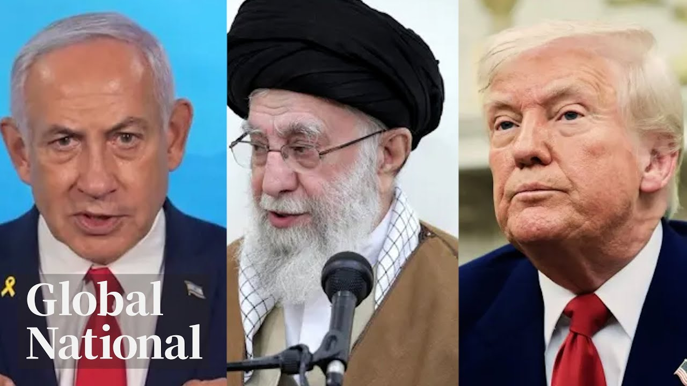

【优质全球新闻节目：Global News｜特朗普称伊朗与以色列同意"全面彻底停火"｜加拿大时间2025-06-23日】
Summary: Breaking news of a ceasefire after Iran's missile strikes on US bases, Trump's claims, Canada-EU defense deal, extreme heat in Ontario/Quebec, and NBA star Shai Gilgeous-Alexander's historic win.
摘要： 突发新闻：伊朗导弹袭击美军基地后宣布停火，特朗普表态，加拿大与欧盟达成国防协议，安大略省/魁北克省极端高温，以及NBA球星谢伊·吉尔杰斯-亚历山大的历史性胜利。

⏱️ Estimated Reading Time: 31 min
📚 六级生词 📚 雅思生词 📚 托福生词 📚 专八生词 📚 SAT生词 📚 考研生词 📚 GRE生词 📚 高考生词
[Music] Breaking news this Monday night.
[音乐] 本周一晚间突发新闻。
Word of a ceasefire after Iran launches missiles towards American air bases.
伊朗向美军基地发射导弹后传出停火消息。
They wanted it to be proportionate and yet deescalatory.
他们希望行动既对等又能降级冲突。
What President Trump is claiming tonight and how Iran is responding.
特朗普总统今晚的声明及伊朗的回应。
Canada's new security and defense deal with the European Union.
加拿大与欧盟达成新的安全与国防协议。
What it will allow Canada to do faster.
该协议将加速加拿大的行动能力。
The heat is on dangerously.
高温天气来势汹汹。
there. They just don't even want to go out.
人们甚至不愿出门。
The blistering temperatures baking parts of Ontario and Quebec.
安大略省与魁北克省部分地区遭遇酷热。
Plus, a Canadian hot shot makes history.
此外，一位加拿大球星创造历史。
It's hard to believe that I'm I'm part of that group.
"难以置信我能成为这一传奇群体的一员。"
How NBA star Sheay Gilgis Alexander has slam dunked his way into an elite club.
NBA球星谢伊·吉尔杰斯-亚历山大如何跻身精英俱乐部。
Global National with Donna Fzen.
唐娜·弗雷兹主持的《全球国家》。
Iran had said it would fight back and it did, firing missiles at Qatar, targeting an American air base in the Persian Gulf, the largest US military installation in the region.
伊朗曾表示将反击并付诸行动，向卡塔尔发射导弹，目标为波斯湾美军基地——该地区最大的美国军事设施。
And then late today, President Donald Trump announced what he says is a ceasefire between Iran and Israel.
今日晚些时候，特朗普总统宣布伊朗与以色列达成停火协议。
Congratulations to everyone, he wrote.
"祝贺所有人，"他写道。
It has been fully agreed by and between Israel and Iran that there will be a complete and total ceasefire in approximately six hours from now when Israel and Iran have wound down and completed their inrogress final missions for 12 hours at which point the war will be considered ended.
"以色列与伊朗完全同意，约六小时后当双方逐步停止并完成最后12小时任务时，将实现全面彻底停火，届时战争宣告结束。"
Good evening and thanks for joining us.
晚上好，感谢收看。
It sounds definitive, but there are lots of qualifiers about the timing, and it is unclear what exactly Iran and Israel have agreed to and whether this could be a durable ceasefire.
声明看似明确，但时间点存在诸多限制条件，且伊朗与以色列具体协议内容及停火持久性尚不清晰。
The US was bracing for retaliation after President Trump sent that fleet of B2 stealth bombers to drop multiple bunker buster bombs on Iranian nuclear sites over the weekend, injecting the US directly into the conflict.
美国在特朗普派遣B2隐形轰炸机周末袭击伊朗核设施后准备应对报复，此举使美国直接卷入冲突。
Today, the head of the International Atomic Energy Agency said without inspectors on the ground in Iran, there is no way to verify how much of Iran's nuclear program was destroyed.
国际原子能机构负责人今日表示，若无实地核查员，无法确认伊朗核设施损毁程度。
But he says it's believed significant damage was done.
但他称据信已造成重大破坏。
to achieve the long-term assurance that Iran does not acquire a nuclear weapon and for the continued effectiveness of the global non-prololiferation regime.
"为实现伊朗不拥核的长期保证及全球防扩散体系持续有效。"
We must return to negotiations.
"我们必须重返谈判。"
Now, talk of this ceasefire.
当前关于停火的讨论。
There are lots of threads to follow here.
事件脉络错综复杂。
Jackson Proco is with me from Washington.
华盛顿的杰克逊·普罗科与我连线。
Jackson, this is moving fast.
杰克逊，事态发展迅速。
What do we know for certain?
我们目前能确定什么？
Well, Donna, here's what we understand has happened.
唐娜，目前掌握的情况如下。
The Amir of Qatar mediated the deal between the two nations.
卡塔尔埃米尔斡旋促成两国协议。
According to Reuters, Israel agreed first and then Trump asked the Qataris to convince Iran to agree.
据路透社报道，以色列先同意停火，随后特朗普要求卡塔尔说服伊朗。
Now, this proposal all came together after Iran attacked a US air base in Qatar today in what was a carefully calibrated piece of retaliation for those US strikes on Iran's nuclear program.
该提议成形于伊朗今日袭击卡塔尔美军基地之后——这是对美国打击伊朗核计划的精准报复。
In fact, Iranian officials said that they used the same number of bombs as the US used in Saturday's strikes on Iran.
伊朗官员称其炸弹使用数量与周六美军袭击伊朗时相同。
Shortly after that, Trump called Iran's response, quote, "Very weak."
此后不久，特朗普评价伊朗反应"非常软弱"。
He then the Iranians for giving the US advanced notice of their strike, which allowed the missiles to be intercepted without any injuries.
他随后感谢伊朗提前通报袭击，使导弹得以被拦截且无人伤亡。
And then Trump suggested that response, that measured response, could actually open the door to peace with Israel.
特朗普暗示这一克制回应或为与以色列和平铺路。
Reports tonight suggest that the ceasefire talks with the Qataris really got going after that attack on the facilities in the US facilities when it was abundantly clear that neither the US nor Iran wanted to escalate any further.
今晚报道显示，美伊双方均无意升级冲突的态度明确后，卡塔尔主导的停火谈判才真正推进。
Donna and Jackson, everyone was hoping diplomacy would prevail, but Israel wanted Iran's nuclear program destroyed.
唐娜、杰克逊，尽管众人期待外交解决，但以色列坚持摧毁伊朗核计划。
Is there any hard evidence that has been accomplished?
目前是否有确凿证据表明目标达成？
No. And I think we're a long way from saying that this is a done deal tonight.
没有，且距离宣布彻底解决为时尚早。
Uh first of all, it would require inspectors and time on the ground inside Iran to verify what has happened to the nuclear program, whether any of that highlyenriched uranium was shipped off site and is now perhaps somewhere else in the country.
首先需核查员实地调查伊朗核计划现状，确认高浓缩铀是否已被转移。
Uh yet the White House also seems insistent on claiming success here.
但白宫仍坚持宣称行动成功。
And Trump today was actually lashing out at people who suggested less than full destruction of Iran's nuclear program.
特朗普今日还抨击那些质疑伊朗核设施未完全摧毁的人。
So uh there's a bit of a back and forth here.
因此双方说法存在矛盾。
And then we need to point out the sort of details here, the nitty-gritty on this ceasefire.
此外需关注停火协议的具体细节。
They've built in time for both nations to finish their missions that are currently underway as you mentioned.
如你所言，协议预留时间让双方完成当前任务。
And tonight, Israel has in fact issued fresh evacuation orders for parts of Tyrron.
今晚以色列确实对提伦部分地区发布新疏散令。
It seems that strikes may still be underway.
似乎袭击仍在继续。
And then there's the question of timing here.
此外还存在时间节点问题。
This potential 12-hour window or a full day before this is over.
可能的12小时窗口期或全天候终结冲突。
You've got the president branding this already, saying it should be called the 12-day war.
总统已将其命名为"12日战争"。
It's all very confusing.
局势极其混乱。
It's hard to know what will stick at the end of the day.
最终结果难以预料。
But Donna, after everything the world has been through over the past two weeks, it does feel like it is perhaps a starting point.
但唐娜，经历过去两周的动荡后，这或许是个开端。
All right, Jackson Prosco in Washington. Thank you.
好的，华盛顿的杰克逊·普罗科，谢谢。
Israel did continue to attack Iran today.
以色列今日确实持续攻击伊朗。
And not just nuclear sites.
目标不仅限于核设施。
It bombed the front entrance of a notorious prison in Thran where political prisoners are held.
其轰炸了德黑兰关押政治犯的臭名昭著监狱正门。
Iran fired back, launching a series of missiles and drones at Israel.
伊朗以导弹和无人机回击以色列。
Mike Armstrong is in Jerusalem.
迈克·阿姆斯特朗在耶路撒冷报道。
[Music] [Applause]
[音乐][掌声]
There were multiple waves of missiles in Israel both overnight and midday.
以色列昨夜及午间遭遇多轮导弹袭击。
The country's ambulance service says there were no injuries despite some of the projectiles making it past Israeli air defenses.
尽管部分导弹突破防空系统，救护部门称无人员伤亡。
This was an air strike that hit on the side of a highway in the center of Israel.
本次空袭击中以色列中部高速公路一侧。
And in the south, an electrical facility was struck.
南部某电力设施遭袭。
Power was knocked out to about 8,000 homes temporarily.
约8000户家庭短暂断电。
Our network is very, very strong, very, very robust.
"我们的电网非常强大稳固。"
Iranians have no chance to damage them.
"伊朗人无法破坏。"
Both sides in this war talked publicly Monday about their targets.
冲突双方周一公开谈论打击目标。
Israel says it carried out its most intense day of bombing so far on the Iranian capital.
以色列称其对德黑兰实施了迄今最猛烈轰炸。
The defense minister says it's expanding its attacks from eliminating Iran's nuclear program and missiles.
国防部长表示攻击范围已从摧毁核计划与导弹扩大。
It is now going after things that help the regime hold onto power.
现正打击维持政权统治的关键目标。
One of its targets Monday, Iran's notorious Evan Prison.
周一目标包括伊朗恶名昭彰的埃文监狱。
the main facility where political prisoners are held.
该监狱是关押政治犯的主要场所。
The Iranian foreign minister spent his day in Moscow meeting with Vladimir Putin.
伊朗外长当日赴莫斯科与普京会晤。
Iran has supplied Russia with drones for its campaign in Ukraine.
伊朗曾向俄罗斯提供无人机用于乌克兰战场。
And there are reports Iranian officials are disappointed Russian support hasn't gone further.
有报道称伊朗官员对俄方未进一步支持表示失望。
Similar to the US support of Israel, Russian president did call the attacks on Iran unprovoked aggression.
与美支持以色列类似，俄总统称袭击伊朗是无端侵略。
Growing concerns about what comes next is pushing some to leave Iran.
对局势恶化的担忧促使部分民众离开伊朗。
This was the border with Turkey.
这是伊朗与土耳其边境。
This Iranian says Israel is forcing people out.
这位伊朗人称以色列正迫使民众逃离。
Thyran is empty, she says.
"德黑兰已成空城，"她说。
Now in Israel, for the first time since this conflict began, foreign nationals left on flights from the airport in Tel Aviv.
以色列方面，冲突爆发后首次有外籍人士乘航班离开特拉维夫机场。
A British military aircraft flew British nationals to Cyprus.
英国军机运送公民至塞浦路斯。
Mike Armstrong, Global News, Jerusalem.
迈克·阿姆斯特朗，全球新闻，耶路撒冷报道。
The US bombing of Iran's nuclear sites took place without the approval of US Congress, and President Trump provided no legal justification for it.
美国国会未批准对伊朗核设施的轰炸，特朗普也未提供法律依据。
Russia's president called it an unprovoked aggression.
俄罗斯总统称此为无端侵略。
And earlier today, the French president said this.
今日早些时候法国总统表示：
There is no legality in these strikes, Emanuel Mron said on a visit to Norway.
"这些袭击毫无合法性，"马克龙访问挪威时称。
He agrees Iran should be prevented from building a nuclear weapon, but says the US lacks a moral framework to attack.
他认同应阻止伊朗拥核，但称美国缺乏攻击的道德框架。
The only way to permanently reign in Iran's nuclear ambitions, Macron says, is through diplomacy.
马克龙称唯有外交能永久遏制伊朗核野心。
The head of NATO says he believes the US did not violate international law.
北约秘书长认为美国未违反国际法。
Canada's prime minister was more careful with his words.
加拿大总理措辞更为谨慎。
Mark Carney says he spoke with President Trump overnight and focused on deescalating the conflict.
马克·卡尼称昨夜与特朗普通话，重点讨论冲突降级。
for years, for decades really, uh Iran has pursued uh nuclear weapons, where the state of Iran has been a sponsor of terrorism, Hamas, Hezbollah, the Houthis, and beyond, and where the at least in our opinion, Canada has listed uh the Iranian Revolutionary Guard as a terrorist organization, active terrorist organization.
"数十年来伊朗谋求核武，支持恐怖组织如哈马斯、真主党、胡塞武装等。加方至少将伊朗革命卫队列为活跃恐怖组织。"
These are violations of international law.
"这些行为违反国际法。"
The prime minister is in Europe ahead of the NATO summit in the Netherlands.
总理正于欧洲准备荷兰北约峰会。
He met with European leaders in Belgium, aiming to strengthen ties with Europe when it comes to defense, procurement, and security.
他在比利时会晤欧洲领导人，旨在强化防务、采购与安全合作。
McKenzie Gray is traveling with the prime minister, remembering Canada's past contributions.
麦肯齐·格雷随行报道总理行程，回顾加拿大历史贡献。
Mark Carney visiting a war cemetery in Antworp, Belgium.
马克·卡尼访问比利时安特卫普战争公墓。
He died.
"他牺牲了。"
He died the day after.
"次日牺牲。"
The day after strong wounds.
"重伤后次日。"
Yes, he was.
"是的。"
He was because one day one day 13th October battles that saw 348 Canadian soldiers from the first and second world war die and be laid to rest alongside allies like the Americans, a country longtime friends are now moving away from.
"10月13日战役中348名加军士兵长眠于此，与美军等盟军并肩——而今加美这对老友正渐行渐远。"
We have a peculiar figure in the White House who uh is choosing the road of protectionism and even isolationism.
"白宫现任领导人选择保护主义甚至孤立主义道路。"
either.
"亦是如此。"
Carney's counter to the current administration take things to a new level with other friends leading Canada to sign a new security and defense deal with the European Union.
卡尼政府转而与欧盟签署新安全防御协议，将关系推向新高度。
We are going to build trading relationships with like-minded partners, reliable partners, um partners that uh are aligned with our values.
"我们将与志同道合、价值观一致的可靠伙伴建立贸易关系。"
The broad-ranging deal doesn't mention the US by name, but it sets the table for Canada to move away from Washington, allowing defense companies to participate in European procurement programs, and the Canadian armed forces can buy equipment cheaper and faster.
协议虽未点名美国，但为加拿大疏远华盛顿铺路，允加防务企业参与欧洲采购计划，加军方可更快更低价获取装备。
As an alliance, which will help Canada meet a likely new NATO target, what we will agree as an alliance is a 5% target to spend on GDP when it comes to our collective defense.
作为联盟，这将助加达成北约可能的新目标——成员国同意将集体防务支出提至GDP的5%。
Getting NATO countries to increase defense spending has been a key demand of Donald Trump, a part of a political dichconomy that Carney and Europe face.
提高北约国防支出是特朗普核心要求，卡尼与欧洲面临政治两难。
Trying to keep the US a happy NATO member while strengthening partnerships to distance themselves from an unpredictable president.
既要维系美国北约成员身份，又需强化伙伴关系以应对不可预测的总统。
We're all going to NATO, but only some of us in NATO are talking about an allied industrial policy that will make us stronger.
"我们都将出席北约会议，但仅部分成员国讨论能增强实力的联盟产业政策。"
That's the future of trade.
"这才是贸易的未来。"
Um, not a narrow discussion on tariffs.
"而非局限于关税的狭隘讨论。"
Carney and Trump spoke early Monday morning, Donna, about Iran and trade.
唐娜，卡尼与特朗普周一早通话讨论伊朗与贸易。
And while the two are both going to be at the NATO summit on Wednesday, Canadian officials say not to expect the pair to meet one-on-one.
尽管两人均将出席周三北约峰会，加官员称不预期双方单独会晤。
Okay, Mackenzie Gray in Brussels. Thanks.
好的，布鲁塞尔的麦肯齐·格雷，谢谢。
Ukraine's president will be at the NATO summit again this year.
乌克兰总统今年将再度出席北约峰会。
Vadomir Zilinski is still pushing to be part of NATO, though the US president does not support that.
尽管美国总统反对，泽连斯基仍力推加入北约。
At the same time, Russia is keeping up its attacks.
与此同时俄罗斯持续攻击。
At least 11 Ukrainians were killed today, and Zilinski keeps trying to shore up support from other allies.
今日乌克兰至少11人丧生，泽连斯基持续争取其他盟友支持。
Redmond Shannon reports.
雷德蒙·香农报道。
Much of the world may be focused on the Middle East, but little has changed in Ukraine.
全球焦点虽在中东，但乌克兰局势未变。
Authorities say a child is among those killed in Russia's overnight strikes.
当局称俄罗斯夜间袭击的死者中包含一名儿童。
The country's president arrived on the other side of Europe Monday for a surprise meeting with the head of state of two of his most important allies, the UK and Canada.
乌克兰总统周一突访欧洲另一端，与重要盟友英国和加拿大元首会晤。
Would you please take one step towards me, please?
请您向我走近一步好吗？
Are you still coming?
您还在过来吗？
Yes, we can.
是的，我们可以。
King Charles welcoming Vladimir Zilinski for the second time in three months.
查尔斯国王三个月内第二次迎接弗拉基米尔·泽连斯基。
The men sharing lunch before Zilinski headed to meet British Prime Minister Kier Starmer and some of the Ukrainian troops training in the UK.
双方共进午餐后，泽连斯基会见了英国首相基尔·斯塔默及在英受训的乌军士兵。
I'm very thankful to all of you.
我非常感谢你们所有人。
We are very thankful to UK, all your team and people of the United Kingdom.
我们深深感激英国、你们的团队及全体英国人民。
Before what could be a challenging NATO summit for Zilinski, the leaders announced a cooperation agreement on military production.
在可能充满挑战的北约峰会前，双方宣布了军事生产合作协议。
The first of its kind so far as Ukraine and the UK are concerned.
这是乌克兰与英国之间的首创协议。
Zalinski's latest UK visit is on a day when Ukraine's internal security agency claims it has foiled another assassination plot against him.
泽连斯基访英当日，乌国安局宣称挫败又一起针对他的刺杀阴谋。
The SBU gave new details on how a retired Polish soldier allegedly planned to kill Ukraine's leader in Poland at the airport typically used by Zalinski for his frequent foreign trips to shore up international support.
乌国安局披露新细节：一名波兰退役士兵计划在泽连斯基常用出访的波兰机场实施刺杀。
It claims the man was a longtime sleeper agent for Russia.
该机构指认此人是俄方长期潜伏特工。
Zalinski's traveling around the world does present huge challenges for not just his security, but the security that's provided by the host countries that he's visiting at the time.
泽连斯基的环球访问对其本人及东道国的安保都是巨大挑战。
Attempted assassins only have to be only have to get it right once.
刺杀者只需成功一次。
Um, Zalinski security detail have to get it right all of the time.
而泽连斯基的安保团队必须万无一失。
Last year, Ukraine also arrested two colonels in its own security agency for plotting to kill Zilinski.
去年乌克兰曾逮捕两名涉嫌密谋刺杀泽连斯基的安全局上校。
Redmond Shannon, Global News, London.
雷德蒙·香农，环球新闻，伦敦报道。
Record-breaking temperatures.
破纪录高温。
Coming up, the heat dome smothering parts of Ontario and Quebec.
接下来关注笼罩安大略与魁北克的热穹顶。
Americans are doing whatever they can to stay cool.
美国人正竭力消暑。
A sweltering heat dome is lingering over the eastern half of the US.
酷热穹顶持续笼罩美国东部。
From Wisconsin to Florida, tens of millions of people were under extreme heat warnings today as temperatures soared to new records.
威斯康星至佛罗里达，数千万人今日遭遇破纪录高温预警。
Cities like New York and Washington were expected to reach between 30 and 40° C today.
纽约、华盛顿等城市今日气温预计达30至40摄氏度。
And the dangerously hot conditions are expected to stick around through Wednesday.
极端高温将持续至周三。
That same heat dome is scorching parts of central Canada, too.
同一热穹顶也在炙烤加拿大中部。
There were records broken in Ontario and Quebec, and the humidity is only adding to the misery.
安大略与魁北克打破纪录，潮湿更添煎熬。
Teria Isri reports.
特丽娅·伊斯里报道。
Montreal feels hotter than California's Death Valley.
蒙特利尔体感温度超过加州死亡谷。
We are just trying to drink some water.
我们只能多喝水。
Um, trying to stay cool, but it's not working.
试图降温却收效甚微。
Much of southern Quebec and Eastern Ontario are inside a sweltering heat dome.
魁北克南部与安大略东部笼罩在热穹顶下。
We're from Victoria where it's a lot cooler, so we're not used to humidity.
我们来自更凉爽的维多利亚，难以适应潮湿。
It's a blistering start to summer in central Canada with temperatures hovering around the mid30s, but feeling as high as 46°.
加拿大中部夏季开局酷热，实际温度35度左右，体感达46度。
We've never seen it as warm in Montreal or Toronto or Ottawa as it is to today.
蒙特利尔、多伦多和渥太华从未如此炎热。
Summer camps are moving indoors or spacing out time in the sun.
夏令营转入室内或错开日照时段。
Drinking lots of water, ice water, giving them popsicles this afternoon.
大量饮水、冰水，下午提供冰棍。
And now we've come to play in the water park to cool them down.
现在带他们来水上乐园降温。
In Toronto, schools with no or limited AC have opened cooling centers.
多伦多无空调学校开放降温中心。
There were a bunch of students who bring books and things like there.
许多学生带着书本过来。
They just don't even want to go out.
他们根本不愿外出。
For some, there's no reprieve from the heat with power outages hitting parts of that city.
部分地区停电令居民无处避暑。
In Toronto's east end, the beach is packed.
多伦多东端海滩人满为患。
But in Ottawa, some popular tourist spots are quiet.
而渥太华热门景点却门可罗雀。
It's too hot for his paws.
它的爪子受不了高温。
We're spending most of the time inside today.
今天我们大多待在室内。
Public health officials are warning Canadians to do just that, particularly seniors, children, and people with pre-existing medical conditions.
公共卫生部门建议民众尤其老幼病患留在室内。
But if you do venture out, avoid the hottest times of day.
若外出请避开高温时段。
Nowhere better to be than on the water in a heat wave.
热浪中没有比水上更佳去处。
Environment Canada says this heatwave is particularly dangerous because there was no buildup.
加拿大环境部称此次热浪因骤然来袭尤为危险。
It came all of a sudden.
高温突袭而至。
The extreme temperatures are expected to let up in the next few days.
极端高温预计数日后缓解。
Donna Teria Israel in Montreal.
唐娜·特丽娅·伊斯雷尔，蒙特利尔报道。
Thank you.
谢谢。
Ahead, how a widening military conflict in the Middle East could spike oil prices.
稍后关注中东军事冲突扩大如何推高油价。
Whenever there is a conflict in the Middle East, there is a risk it will disrupt the oil market.
中东冲突总可能扰乱石油市场。
Crude surged above $75 per barrel today, but then dropped again.
原油今日突破75美元后回落。
Iran controls a key shipping route in the Persian Gulf.
伊朗掌控波斯湾关键航道。
Heather Urk's West explains what's at stake if the conflict accelerates.
希瑟·厄克西将分析冲突升级的风险。
52 years ago, it was a crisis that brought North American energy security to the forefront when Arab nations stopped shipping oil to the West in retaliation for America's wartime support of Israel.
52年前阿拉伯国家断油报复美国援以，引发北美能源安全危机。
It caused pumps across North America to run dry.
北美各地油泵干涸。
The reliance on Middle Eastern supply, even though it's still great, still very impactful, isn't like it would have been in decades past.
尽管中东供应仍举足轻重，但依赖度已不及往昔。
It's why after the US launched that series of attacks on Iranian nuclear targets over the weekend after an initial surge, the impact on global oil prices has been muted.
因此美国袭击伊朗核设施后，油价仅短暂飙升。
A little bit of shrugging shoulders.
市场反应平淡。
Obviously, we're, you know, about $10 off of of some low points that we had before, but this is not a market that seems to be in panic.
虽较前期低点上涨约10美元，但未见恐慌。
Countries like the US and Canada have become major oil producers since the 1970s.
美加自1970年代起成为产油大国。
But the Middle East and Iran still hold power in this global supply chain.
但中东与伊朗仍主导全球供应链。
Located between Oman and Iran, the straight of Hermuz is considered the world's most important oil choke point, connecting the Persian Gulf to the Arabian Sea.
霍尔木兹海峡连接波斯湾与阿拉伯海，是全球最关键石油咽喉。
Every day, 20 million barrels of crude come through this straight.
每日2000万桶原油经此运输。
That's five times more than Canada currently exports, representing 20% of the global oil trade.
相当于加拿大出口量的五倍，占全球石油贸易20%。
If the route was closed, there are two regional pipeline alternatives.
若航道关闭，仅有两条区域管道替代。
The Saudi East West Line or the Abu Dhabi line operated by the UAE.
沙特东西管线或阿联酋运营的阿布扎比管线。
But American officials estimate those lines only have about 2.5 million barrels a day in available capacity, replacing just a fraction of what would be lost.
但美方估算其日输送量仅250万桶，远不足弥补缺口。
an eight to9 dollar a barrel US uh spike if we were to see a a a blockade happen.
若封锁发生，油价或暴涨8-9美元。
So far Iran is only threatening a blockade.
目前伊朗仅发出封锁威胁。
The US president responding online with a call to everyone keep oil prices down and to the Department of Energy drill baby drill.
美总统呼吁各方稳油价，并喊话能源部"加大开采"。
Though those commands fall outside the president's actual power, the markets appear to be maintaining calm for now.
虽总统无权直接干预，市场目前保持冷静。
Heather Urex West, Global News, Calgary.
希瑟·厄雷克斯-韦斯特，环球新闻，卡尔加里报道。
Hoop dreams come true.
篮球梦成真。
Next, a slam dunk for Hamilton, Ontario's SGAA and his team.
接下来关注安大略汉密尔顿的SGA及其球队。
[Music]
[音乐]
The list of Canadians who have won an NBA title just got longer.
NBA夺冠加拿大人名单再添新员。
Hamilton's Sha Gilis Alexander and Montreal's Lou Dort helped steer the Oklahoma City Thunder into the history books.
汉密尔顿的谢伊·吉尔杰斯-亚历山大与蒙特利尔的吕冈茨率雷霆队创历史。
They beat the Indiana Pacers in game seven of the NBA finals.
总决赛抢七战胜步行者队。
And SGA, as he is known, is the best of the best this year.
绰号SGA的他今年登顶巅峰。
Though, as Jeff Simple reports, his story is bigger than one title or one trophy.
但杰夫·辛普尔报道，他的传奇远超单座奖杯。
This industrial city in southwestern Ontario might seem a long way from NBA glory.
这座安大略西南工业城看似与NBA荣耀相距甚远。
But Hamilton's hoop dreams just came true.
但汉密尔顿的篮球梦刚刚实现。
Hamilton's own Shea Gilgis Alexander or SGAA made history, winning the NBA championship, becoming the first Canadian to be finals MVP and only the fourth player ever to also be the league's top scorer and regular season MVP alongside Kareem Abdul Jabar, Michael Jordan, and Shaquille O'Neal.
汉密尔顿的谢伊·吉尔杰斯-亚历山大创历史：NBA总冠军、首位加拿大总决赛MVP，继贾巴尔、乔丹、奥尼尔后第四位同时包揽得分王与常规赛MVP的球员。
To have a Canadian with those titles in that company in this sport, a truly global sport, is a very special thing indeed.
加拿大球员在这项全球运动中获此成就，实属非凡。
Asked about being ranked among the all-time greats, the 26-year-old said this.
被问及跻身历史级巨星，26岁的他如此回应。
It's hard to believe that I'm I'm part of that group.
难以置信我能位列其中。
It's hard to even fathom that I'm that type of basketball player sometimes.
甚至难以理解自己已成为这类球员。
That humility combined with a fierce work ethic and self-belief is what people here in his hometown of Hamilton remember and revere.
谦逊、敬业与自信令家乡汉密尔顿民众铭记与敬重。
At his old high school, they've built murals in his honor.
母校为他绘制纪念壁画。
And the party is just getting started.
庆祝活动刚刚开始。
Nice hat.
帽子不错。
Let's see the hat.
看看帽子。
There it is.
在这里。
NBA champs.
NBA冠军。
SGAA's friend and personal trainer had a front row seat.
SGA好友兼私人教练全程见证。
He says Gilgus Alexander remains deeply connected to his Hamilton roots.
他说吉尔杰斯-亚历山大始终心系故乡。
Just won a championship last night.
昨晚刚夺冠。
Parade's going to be tomorrow and we're flying home tomorrow night.
明天游行，明晚飞回家乡。
So, he loves he loves being home.
他热爱归乡。
He loves where he's from.
热爱这片土地。
And that that's truly special to see.
这情怀弥足珍贵。
In the offseason, Gilgus Alexander runs this youth basketball camp in Hamilton.
休赛期他在汉密尔顿运营青少年篮球训练营。
His former coach and teacher remembers when he was a gangly eighth grader with an unparalleled work ethic.
昔日教练回忆他八年级时就展现出非凡毅力。
He would get me to get the gym open uh 6:00 a.m. before school.
他让我清早6点开体育馆。
He is someone if you want someone to win, he would be the one that you would want to win.
若需有人赢，他就是那个人选。
And he won alongside fellow Canadian teammate Montreal's Lou Dort.
他与加拿大队友吕冈茨并肩夺冠。
Their Oklahoma City Thunder is the youngest team in the NBA, suggesting they're far from done making history.
雷霆队是NBA最年轻球队，预示传奇将继续。
Jeff Sample, Global News, Hamilton, Ontario.
杰夫·桑普尔，环球新闻，安大略汉密尔顿报道。
What a story that is.
传奇故事。
Global National for this Monday.
本周一环球国家新闻。
I'm Donna Fzen.
我是唐娜·弗雷森。
Tonight's your Canada showcases Silver Creek, BC, Lunenburgg, Nova Scotia, and an iceberg off the coast of Battle Harbor, Newfoundland, and Labrador.
今晚《你的加拿大》将展示BC省银溪、新斯科舍省卢嫩堡，及纽芬兰Battle港外冰山。
Send your pictures of Canadian pride to Global National at globalnews.ca.
将加拿大骄傲照片发送至globalnews.ca。
And thanks for watching.
感谢收看。
Hope to see you here again tomorrow.
明天再见。
Bye-bye.
再见。